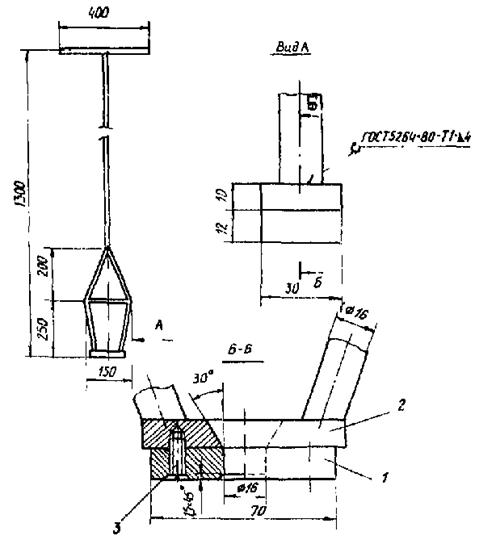

ВЕДОМСТВЕННЫЕ СТРОИТЕЛЬНЫЕ НОРМЫ
СВАРКА СТАЛЬНОГО
ОЦИНКОВАННОГО
ПРОФИЛИРОВАННОГО НАСТИЛА
ДЛЯ ОБЛЕГЧЕННОЙ КРОВЛИ
ВСН 349-87
Минмонтажспецстрой СССР
МИНИСТЕРСТВО
МОНТАЖНЫХ И СПЕЦИАЛЬНЫХ
СТРОИТЕЛЬНЫХ РАБОТ СССР
Москва 1988
РАЗРАБОТАНЫ:
ВНИПИ Промстальконструкция Минмонтажспецстроя СССР
Руководители темы Л.Л. Рубанович, канд. техн. наук С.Л. Жизняков, ответственный исполнитель В.И. Окупник, исполнители П.Е. Шелов, И.Н. Юрлов
ЦНИИ Проектстальконструкция Госстроя СССР
(руководитель темы канд. техн. наук В.Г. Кравченко, ответственный исполнитель Г.В. Оносов)
Госстрой СССР
А.М. Лошаков
ВНЕСЕНЫ И ПОДГОТОВЛЕНЫ К УТВЕРЖДЕНИЮ
Главстальконструкцией Минмонтажспецстроя СССР (канд. техн. наук Е.П. Полуянов)
С введением в действие ВСН 349-87 «Сварка стального оцинкованного профилированного настила для облегченной кровли» утрачивает силу ВСН 349-75 «Инструкция по сварке стального оцинкованного профилированного настила для облегченной кровли».
Согласованы Госстроем СССР, письмо от 16 ноября 1987 г. № А4-5672-8
|
Министерство монтажных и специальных строительных работ СССР (Минмонтажспецстрой СССР) |
Ведомственные строительные нормы |
ВСН 349-87 |
|
Минмонтажспецстрой СССР |
||
|
Сварка стального оцинкованного профилированного настила для облегченной кровли |
Взамен ВСН 349-75 ММСС СССР |
1.1. Настоящие нормы распространяются на выполнение сварных точечных соединений неокрашенного профилированного настила при монтаже покрытия облегченной кровли зданий и сооружений с неагрессивными средами.
1.2. Нормы устанавливают требования к сварке листов настила с трапециевидной формой гофра (ГОСТ 24085-86) из оцинкованной стали толщиной 0,8; 0,9 и 1,0 мм марки Ст3 между собой и со стальными оцинкованными и неоцинкованными несущими конструкциями покрытия.
1.3. Сварные соединения листов настила между собой следует выполнять контактной точечной сваркой.
1.4. Сварные соединения листов настила с прогонами следует выполнять одним из перечисленных ниже способов дуговой точечной сварки: под флюсом, в углекислом газе, самозащитной порошковой проволокой, покрытым электродом. Для соединения листов настила с оцинкованными прогонами предпочтительно применение дуговой точечной сварки в углекислом газе.
1.5. Монтаж покрытия следует вести предварительно укрупненными картами из листов настила или блоками из листов настила и прогонов.
1.6. Технико-экономическую целесообразность применения способа сварки настила в каждом отдельном случае определяет специализированная проектно-технологическая организация (подразделение) - разработчик ППСР (технологии сварки).
1.7. Места расположения сварных соединений и расстояние между ними регламентируют чертежи КМ или КМД.
1.8. К выполнению работ по дуговой точечной сварке допускают сварщиков не ниже 3 разряда, а по контактной сварке - не ниже 2 разряда, прошедших дополнительную подготовку по специальной программе (на основе настоящей инструкции) и аттестацию на право производства сварки данным способом.
1.9. При сборке, сварке и антикоррозионной защите покрытия следует руководствоваться также СНиП III-18-75, СНиП II-28-73*, СНиП 3.04.03-85, СНиП III-4-80 и ОСТ 36-60-81.
|
Внесены Главстальконструкцией Минмонтажспецстроя СССР |
Утверждены
Минмонтажспецстроем СССР |
Срок введения в действие 1 января 1988 г. |
2.1. Сварочные материалы для применения при дуговой точечной сварке приведены в табл. 1. Допускается использование самозащитной порошковой проволоки и покрытых электродов других марок, позволяющих получить сварные соединения, соответствующие требованиям настоящих норм.
2.2. Контроль сварочных материалов непосредственно на монтируемом объекте необходимо выполнить в соответствии с требованиями ОСТ 36-60-81; в частности, проверить наличие сертификата, подтверждающего их соответствие государственному стандарту, техническим условиям или паспорту.
2.3. Поверхность проволоки должна быть чистой и гладкой, без механических повреждений.
Таблица 1
|
Вид и марка материала |
Диаметр, мм |
Государственный стандарт (технические условия) |
|
|
Механизированная под флюсом |
Сварочная проволока Св-08, Св-08А. Св-08ГА, флюс АН-348-А |
2,0 |
|
|
Механизированная самозащитной порошковой проволокой |
Порошковая проволока СП-2, ППВ-5, ПП-АНЗ |
2,5 |
ТУ 36-1830-74 ММСС СССР |
|
2,35 |
ТУ 36-1904-76 ММСС СССР |
||
|
3,0 |
ТУ 14-4-982-79 Минчермет СССР |
||
|
Механизированная в углекислом газе |
Сварочная проволока СВ-08Г2С |
1,2 |
|
|
1,6 |
|||
|
Двуокись углерода сварочная или пищевая |
ГОСТ 8050-76 |
||
|
Ручная покрытым электродом |
Электроды МР-3 |
3,0 |
|
|
4,0 |
2.4. Сварочные материалы следует хранить в соответствии с требованиями ОСТ 36-60-81, в частности, в сухом закрытом помещении при температуре не ниже плюс 18 °C и относительной влажности не более 50 %.
2.5. Порошковые проволоки, покрытые электроды и флюс перед употреблением необходимо прокалить. Режим прокалки сварочных материалов и гарантийный срок их хранения при соблюдении условий п. 2.4 приведены в табл. 2.
2.6. При транспортировке и хранении на рабочем место прокаленные материалы должны находиться в упаковке из водонепроницаемой бумаги или полиэтиленовой пленки.
Таблица 2
|
Гарантийный срок хранения, мес. |
Режим прокалки |
Срок годности после прокалки, сутки |
Количество допустимых прокалок |
||
|
температура, ºC |
время, ч |
||||
|
СП-2 |
6 |
150 - 200 |
1,5 |
5 |
1 |
|
ППВ-5 |
6 |
180 - 200 |
2,0 |
5 |
1 |
|
ПП-АНЗ |
4 |
230 - 250 |
2,0 |
5 |
1 |
|
МР-3 |
6 |
150 - 180 |
1,5 |
30 |
2 |
|
АН-348-А |
12 |
300 - 350 |
1,5 |
15 |
многократно |
3.1. Для механизированной дуговой точечной сварки под флюсом, в углекислом газе или порошковой проволокой рекомендуется использовать специализированную установку конструкции треста Южстальконструкция Главстальконструкции (черт. 1). Установку следует комплектовать полуавтоматами ПДО-517УЗ, (А-765УЗ), ПДГ-508УЗ, А-1197 или других марок, предназначенными для сварки стальных конструкций.
Машина ЭЗМЮ-1 для дуговой точечной сварки оцинкованного профилированного настила с прогонами
1 - подающий механизм; 2 - кассета; 3 - опорная стойка кассеты; 4 - колесо; 5 - сварочная головка; 6 - станина; 7 - опорная стойка; 8 - ручка
Черт. 1.
3.2. При работах в монтажных условиях сварочные посты для механизированной и ручной сварки должны быть установлены в машзалах. Состав сварочных постов представлен в табл. 3.
Таблица 3
|
Оборудование поста |
|
|
Механизированная сварка под флюсом |
Специализированная установка для сварки под флюсом конструкции треста Южстальконструкция; сварочный выпрямитель ВДУ-505УЗ, ВДГ-606УЗ или ВС-600 (сварочный преобразователь ПСГ-500-1УЗ); катушки со сварочной проволокой, электрическая печь СШО-3,2.3,2,5/3,5-И1, жестяные коробки с флюсом |
|
Механизированная сварка самозащитной порошковой проволокой |
Специализированная установка для сварки порошковой проволокой конструкции треста Южстальконструкция; сварочный выпрямитель ВДУ-505УЗ, ВДГ-606УЗ и ВС-600 (сварочный преобразователь ПСГ-500-1УЗ), электрическая печь СШО-3,2.3,2.5/3,5-И1; катушки со сварочной проволокой |
|
Механизированная сварка в углекислом газе |
Специализированная установка для сварки в углекислом газе конструкции треста Южстальконструкция; сварочный выпрямитель ВДУ-505УЗ, ВДГ-606УЗ и ВС-600 (сварочный преобразователь ПСГ-500-1УЗ); баллон с двуокисью углерода; катушки со сварочной проволокой |
|
Ручная сварка покрытым электродом |
Приспособление для ручной сварки с формирующим устройством; трансформатор ТД-500-4У2, ТДМ-401У2, ТДМ-503У2; электрическая печь СШО-3,2.3,2.5/3,5-И1 |
3.3. Для контактной точечной сварки листов между собой при укрупнении в карты следует применять специализированную установку конструкции треста Спецстальконструкция Главстальконструкции (черт. 2). Установку необходимо комплектовать машиной типа К-264, предназначенной для односторонней двухточечной сварки. Для сварки листов между собой при укрупнении в карты допускается применение подвесных машин МТП-1203, МТПГ-150, МТП-806 и МТПГ-75 с консолями клещей, удлиненными до 800 - 900 мм.
3.4. Для контактной сварки покрытия зданий с неагрессивной средой следует применять электроды (ГОСТ 14111-77) из бронзы марок БрХ, БрНБТ (черт. 3) или электроды из бронзы тех же марок с молибденовой (вольфрамовой) вставкой (черт. 4), а для зданий со слабоагрессивной средой - только электроды из бронзы с молибденовой (вольфрамовой) вставкой.
3.5. Поверхность торцов бронзовых электродов необходимо зачищать наждачной бумагой после сварки 70 - 100, а бронзовых электродов со вставкой - 200 - 250 точек. После сварки 900 - 1100 точек контактную поверхность торца электрода необходимо перетачивать на токарном станке для восстановления первоначальной формы.
Установка УСПН-2 для односторонней двухточечной контактной сварки оцинкованного профилированного настила
1 - колесо; 2 - пружина; 3 - машина для односторонней двухточечной сварки
типа К-264; 4 - кулачок; 5 - кабель сварочный; 5 - рычаг поворотный; 7 - электрод; 8 - станина
Черт. 2.
Электрод для контактной сварки оцинкованного профилированного настила, работающего в неагрессивных средах
Черт. 3.
Электрод для контактной сварки оцинкованного профилированного настила, работающего в слабоагрессивных средах
1 - электрод; 2 - вставка; 3 - припой
Черт. 4.
4.1. Проплавляемые участки поверхности и прилегающая к ним зона свариваемых листов и прогонов в радиусе не менее 20 мм перед сваркой должны быть очищены от грязи, ржавчины, смазки и прочих загрязнений. Перед выполнением соединений контактной сваркой указанные поверхности необходимо дополнительно обезжирить бензином-растворителем для лакокрасочной промышленности (уайт-спиритом) ГОСТ 3134-78*.
4.2. Укрупнение листов в карты и блоки надлежит выполнять на горизонтальном стенде, представляющем собой жесткую рамную конструкцию из балок, на которой установлены ограничители по размеру карт (блоков), приспособления для прижатия свариваемых элементов и порталы для подвесной контактной машины. Стенд для контактной сварки листов друг с другом должен включать в себя балки, служащие опорами продольных полок собранных листов.
4.3. Поверхности опорных балок стенда, непосредственно прилегающие к настилу, должны быть ровными, гладкими и чистыми. Неплоскостность поверхности опорных балок на длине 1 м не должна превышать 1,5 мм, а максимальная стрела прогиба на длине 12 м не должна превышать 5 мм.
4.4. Для выполнения точечных соединений необходимо обеспечить плотное (без зазора) прижатие свариваемых элементов в зоне сварки и выдерживать его в течение 2 - 3 с после окончания протекания сварочного тока. При дуговой сварке между свариваемыми поверхностями допускается зазор не более 0,5 мм.
4.5. Поверхности соединений после окончания сварки должны быть очищены от шлака и остатков флюса.
4.6. В процессе сварки необходимо вести «Журнал сварочных работ» (см. приложение).
5.1. При механизированной сварке специализированной установкой конструкции треста Южстальконструкция необходимо выполнить следующие операции в указанной ниже последовательности: расположить машину в месте сварки, установить требуемое напряжение холостого хода источника питания, нажатием на ручки машины плотно прижать опорными стойками лист к прогону, включить подачу сварочной проволоки и выполнить точечное сварное соединение, снять усилие прижатия и переместить машину к месту сварки следующего соединения.
5.2. Механизированную сварку в углекислом газе проволокой сплошного сечения или порошковой проволокой следует выполнять на постоянном токе обратной полярности, механизированную сварку под флюсом - на постоянном токе прямой полярности, а ручную сварку электродами с рутиловым покрытием - на переменном токе.
5.3. При сварке в углекислом газе подачу газа следует начать одновременно с подачей сварочной проволоки и закончить через 1 - 2 с после обрыва дуги.
5.4. При ручной сварке покрытыми электродами необходимо выполнить следующие операции в приводимой ниже последовательности: установить в месте сварки приспособление (черт. 5), плотно прижать лист к прогону нажатием с помощью приспособления, установить электрод в отверстие формирующего устройства и выполнить точечное сварное соединение, удалить приспособление и переместить его к месту сварки следующего соединения. Указанные сборочные операции осуществляет монтажник.
Устройство для ручной дуговой точечной сварки оцинкованного профилированного настила

1 - медная пластина; 2 - стальная пластина; 3 - винт М16×16 ГОСТ 17475-80
Черт. 5.
Таблица 4
|
Толщина свариваемых элементов, мм |
Диаметр сварочной проволоки (электрода), мм |
Сварочный ток, А |
Напряжение дуги, В |
Скорость подачи сварочной проволоки, м/ч |
Время сварки, с |
Вылет сварочной проволоки, мм |
Расход углекислого газа, л/мин |
|
|
Механизированная под флюсом |
1 + (6¸10) |
2,0 |
350-400 |
30-32 |
350-400 |
2 |
30 |
- |
|
1 + 1 + (6¸10) |
2,0 |
350-400 |
30-32 |
350-400 |
4 |
30 |
- |
|
|
Механизированная самозащитной порошковой проволокой ПП-АНЗ |
1 + (6¸10) |
3,0 |
250-300 |
25-28 |
120-140 |
2-3 |
30-40 |
- |
|
1 + 1 + (6¸10) |
3,0 |
300-330 |
26-30 |
120-140 |
3-4 |
30-40 |
- |
|
|
СП-2 |
1 + (6¸10) |
2,5 |
280-330 |
25-28 |
280-300 |
2-3 |
30-40 |
- |
|
1 + 1 + (6¸10) |
2,5 |
300-340 |
26-30 |
280-310 |
3-4 |
30-40 |
- |
|
|
ППВ-5 |
1 + (6¸10) |
2,35 |
150-130 |
25-28 |
180-230 |
2-3 |
40-50 |
- |
|
1 + 1 + (6¸10) |
2,35 |
190-210 |
26-30 |
180-230 |
2-3 |
40-50 |
- |
|
|
Механизированная в углекислом газе |
1 + (6¸10) |
1,2 |
320-360 |
26-30 |
530-590 |
4-5 |
18-20 |
15-20 |
|
1 + 1 + (6¸10) |
1,2 |
320-360 |
30-33 |
530-590 |
5-7 |
18-20 |
15-20 |
|
|
1 + (6¸10) |
1,6 |
420-460 |
30-34 |
350-400 |
3-5 |
20-23 |
15-20 |
|
|
1 + 1 + (6¸10) |
1,6 |
420-460 |
32-36 |
350-400 |
4-6 |
20-23 |
15-20 |
|
|
Ручная покрытым электродом МР-3 |
1 + (6¸10) |
3 |
120-140 |
- |
- |
3-4 |
- |
- |
|
1 + 1 + (6¸10) |
3 |
120-140 |
- |
- |
4-5 |
- |
- |
|
|
1 + (6¸10) |
4 |
160-200 |
- |
- |
3-4 |
- |
- |
|
|
1 + 1 + (6¸10) |
4 |
160-200 |
- |
- |
4-5 |
- |
- |
5.5. Дуговую точечную сварку в зависимости от способов следует выполнять на режимах, приведенных в табл. 4.
6.1. Укрупнение карт настила на стационарной машине необходимо выполнять посредством последовательной оборки и приварки отдельных листов. При укрупнении карт или блоков с помощью переносных машин свариваемые элементы надлежит собирать на стенде.
6.2. При сварке установкой конструкции треста Спецстальконструкция необходимо выполнить следующие операции в указанной ниже последовательности: установить машину в место сварки, плотно прижать лист к прогону нажатием электродов (при этом происходит сварка), после окончания сварки снять давление и переместить установку к месту сварки следующего соединения.
6.3. Контактную сварку листов настила между собой следует выполнять на режимах, приведенных в табл. 5.
Таблица 5
|
Ступень регулирования сварочного тока |
Время сварки, с |
Время проковки, с |
Усилие на электроде, кН (кгс) |
Расстояние между электродами, мм |
|
|
МТПГ-75 |
10 (14) |
0,4-0,6 |
1 |
0,7 (70-80) |
- |
|
Специализированная установка конструкции треста Спецстальконструкция |
4-7 |
0,4-0,6 |
3 |
0,6 (60-70) |
30 |
7.1. Контроль качества сварочных работ необходимо осуществлять посредством входного контроля качества сварочных материалов, условий их хранения и подготовки к сварке, предварительной проверки технического состояния оборудования, проверки соблюдения технологии оборки и сварки, контроля качества сварных соединений.
7.2. Качество сварочных материалов, условия их хранения и подготовки к сварке должны соответствовать требованиям раздела 2.
7.3. Техническое состояние оборудования должно соответствовать требованиям раздела 3.
7.4. Лицо, ответственное за производство работ, должно систематически (не реже 2 раз в смену) проверять соблюдение технологии сборки и сварки.
7.5. Качество сварных соединений следует контролировать внешним осмотром и измерением всех соединений, механическими испытаниями контрольных образцов на срез и образцов технологической пробы на отрыв.
7.6. По внешнему виду соединение, полученное дуговой точечной сваркой, должно иметь поверхность с плавным переходом к основному металлу, диаметр величиной 20±2 мм и выпуклость (усиление по высоте) - не более 4 мм; ослабление не допускается.
Поверхность листов в местах сварных соединений, выполняемых контактной точечной сваркой, должна иметь следы нагрева и отпечаток торца электрода с глубиной вмятины не более 0,2 мм.
7.7. В сварных соединениях не допускаются трещины и несплавления всех видов и направлений, прожоги и выплески металла.
7.8. Для каждого применяемого способа сварки и типа сварного соединения следует сваривать не менее 3 контрольных образцов и образцов технологической пробы (на откорректированном режиме в условиях, тождественных условиям сварки проектных соединений). До испытаний образцы должны быть приняты в соответствии с требованиями п. 7.6.
7.9. Контрольные образцы испытывают на срез перед началом производства сварочных работ на сооружаемом объекте. Конструкция контрольных образцов и оправки для их испытания приведены на черт. 6 и 7.
7.10. Результаты испытания контрольных образцов на срез считают удовлетворительными, если все образцы соединения листов настила между собой выдерживают разрушающее усилие не менее 2,7 кН (280 кгс), а образец соединения листа с несущим элементом - не менее 4,4 кН (450 кгс).
7.11. При положительных результатах испытаний контрольных образцов принимают решение о сварке проектных соединений на установленном режиме. Результаты испытаний оформляют протоколом.
7.12. Образцы технологической пробы следует сваривать и испытывать вручную с вырывом точки на каждом образце один раз в смену, непосредственно перед началом сварки настила.
7.13. Результаты испытания образцов технологической пробы считают удовлетворительными, если разрушение произойдет по линии сплавления или по основному металлу и диаметр ядра составит: в соединении листов между собой - не менее 3,5 мм, а в соединении листа с несущим элементом - не менее 5,0 мм.
Контрольный образец для механических испытаний сварного соединения на срез
I-I - линия разрезки элемента каркаса перед испытанием
Черт. 6.
Хвостовик контрольного образца для испытания на разрывной машине
Количество: 2 шт.
Материал: Сталь 45
Черт. 7.
7.14. Результаты испытаний технологической пробы записывают в «Журнал сварочных работ» с указанием диаметра точки и характера разрушения (см. приложение).
7.15. При наличии дефектных соединений необходимо выполнить дублирующее соединение: при сварке листа с прогоном - в соседнем гофре, при сварке листа с листом - на расстоянии 50 - 70 мм от дефектной точки.
8.1. Антикоррозионную защиту профилированного оцинкованного настила осуществляют в соответствии с требованиями СНиП 2.03.11-85 и СНиП 3.04.03-85.
8.2. В зданиях с неагрессивными средами профилированный оцинкованный настил, включая места крепления листов между собой и листов к прогонам, применяют без дополнительной защиты от коррозии.
8.3. Перед окрашиванием сварные точки следует очистить от брызг металла, шлака, остатков флюса и других загрязнений; точки должны иметь гладкую поверхность без наплывов, с плавным переходом к основному металлу.
Подготовленные сварные соединения следует обезжирить бензином-растворителем для лакокрасочной промышленности (уайт-спиритом) ГОСТ 3134-78* с помощью ветоши или кисти.
8.4. На высушенную поверхность необходимо нанести лакокрасочное покрытие, в котором в качестве материала первого слоя используют фосфатирующие грунтовки ВЛ-02 по ГОСТ 12077-77 или ВЛ-023 по ГОСТ 12077-77. На покрытую фосфатирующей грунтовкой поверхность наносят одну из приводимых ниже систем покрытий.
I вариант
грунтовка АК-070 ОСТ 6-10-401-76 - 1 слой;
эмаль ХВ-124 ГОСТ 10144-75* или ХВ-16 ТУ 6-10-1301-78, ХВ-110 ГОСТ 18374-79, ХВ-113 ГОСТ 18374-79, ХВ-125 ГОСТ 10144-75*, ХВ-1100 ГОСТ 6993-70, ХС-119 ГОСТ 21824-76 - 2 слоя.
II вариант
шпаклевка ЭП-0010 ГОСТ 10277-76 - 1 слой;
эмаль ЭП-773 ГОСТ 23143-78 или ЭП-140 ТУ 6-10-599-74 - 2 слоя.
9.1. При выполнении сварочных работ по креплению оцинкованного профилированного настила необходимо соблюдать требования ГОСТ 12.3.003-75; ГОСТ 12.1.013-78; главы СНиП III-4-80; ОСТ 36-60-81; «Санитарных правил при сварке, наплавке и резке металлов», утвержденных Минздравом СССР; «Правил пожарной безопасности при проведении сварочных и других огневых работ на объектах народного хозяйства», утвержденных ГУПО МВД СССР; «Правил и норм техники безопасности, пожарной безопасности и промышленной санитарии для окрасочных цехов», утвержденных ВПНИМОТ ВЦСПС 17 марта 1970 г.
9.2. Сварочное и вспомогательное оборудование необходимо применять в исправном состоянии и в соответствии с назначением.
9.3. Металлические части сварочного и вспомогательного оборудования, не находящиеся под напряжением, а также свариваемые изделия и конструкции на все время работы должны быть надежно заземлены. При невозможности заземления вторичного контура монтажных машин их необходимо комплектовать автоматическими устройствами, отключающими сеть при случайном переходе первичного напряжения на корпус или электродную часть.
9.4. Присоединение и отключение от сети машзалов, электросварочного и вспомогательного оборудования, а также содержание их в исправном состоянии в процессе эксплуатации и выполнение ремонтных и профилактических работ должен осуществлять электротехнический персонал, имеющий по технике безопасности квалификационную группу не ниже III.
9.5. Переключение ступеней мощности контактных машин, любой мелкий ремонт, исправление повреждений и наладку, а также перемещение установок из машзала к стенду следует производить только при выключенном напряжении сети.
9.6. Сварочные провода должны иметь надежную защиту. Подключать кабели к сварочному оборудованию необходимо только через кабельные наконечники.
Соединение сварочных кабелей следует производить с помощью следующих специальных соединений: зажимов, муфт, а также сварки, пайки или опрессовки с последующей электроизоляцией мест соединения.
9.7. Производство электросварочных работ во время дождя или снегопада при отсутствии машзалов или навесов над оборудованием и рабочим местом электросварщика не допускается.
9.8. Необходимо следить за тем, чтобы вблизи сварочного контура контактных машин не находились отдельные куски металла, которые под действием сильного магнитного поля могут причинить травму.
9.9. Рабочее место при сварке оцинкованного профилированного настила должно хорошо проветриваться естественной или искусственной вентиляцией.
9.10. Для выполнения сварочных работ электросварщик должен быть обеспечен: при дуговой сварке - защитным щитком по ГОСТ 12.4.035-78 со светофильтром по ГОСТ 12.4.080-79; при контактной сварке - защитными очками с бесцветными стеклами по ГОСТ 12.4.013-85.
9.11. Места выполнения сварочных работ, а также размещения сварочного оборудования и баллонов с газами в радиусе не менее 5 м должны быть очищены от горючих материалов, а от легковоспламеняющихся и взрывоопасных материалов - в радиусе не менее 10 м.
9.12. Перемещать газовые баллоны необходимо на специально приспособленных тележках или носилках, а поднимать на высоту - с помощью грузоподъемных механизмов в специальных крытых контейнерах, гарантирующих устойчивое и безопасное положение баллонов при транспортировке.
|
Дата выполнения работ, смена |
Наименование соединяемых элементов, марка свариваемой стали |
Месторасположение свариваемых соединений (по исполнительной схеме или чертежу) |
Отметка о приемке участка кровли или укрупняемого элемента (карты) под сварку, подпись ответственного за производство сварочных работ (мастера, прораба) |
Сварочные материалы (электроды, проволока, флюс) |
Атмосферные условия (температура окружающего воздуха, осадки, скорость ветра) |
|
|
марка, тип |
номер сертификата партии |
|||||
|
1 |
2 |
3 |
4 |
5 |
6 |
7 |
Продолжение таблицы
|
Режим сварки и результаты испытаний технологической пробы |
Фамилия и инициалы сварщика |
Фамилия и инициалы ответственного за производство сварочных работ (мастера, прораба) |
Отметка о приемке сварного соединения, элемента и подпись ответственного за производство сварочных работ |
||
|
Ступень регулирования, сварочный ток (род, полярность), А |
Напряжение дуги, В |
Характер разрушения технологической пробы, диаметр, сварной точки, м |
|||
|
8 |
9 |
10 |
11 |
12 |
13 |
СОДЕРЖАНИЕ
|
4. Общие указания по сборке и сварке. 5 6. Контактная точечная сватка. 6 |